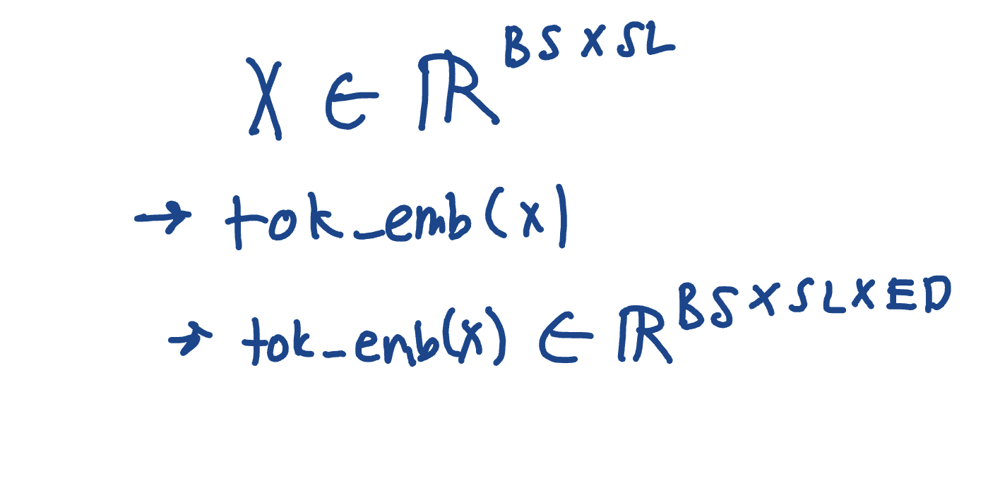
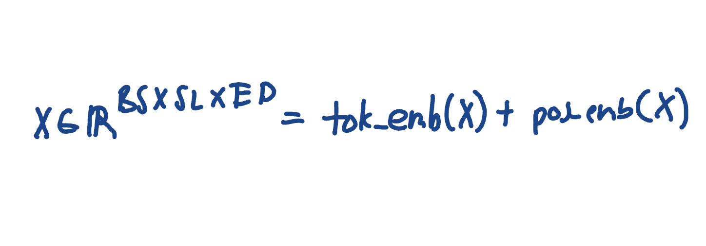
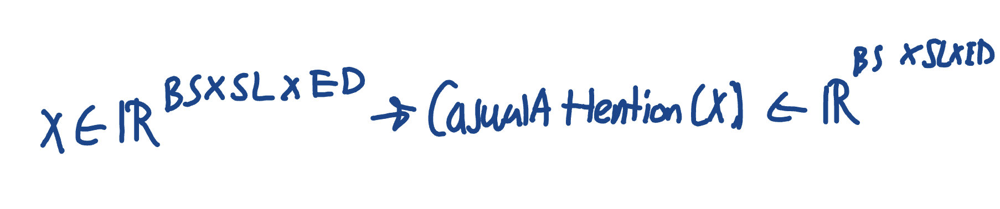
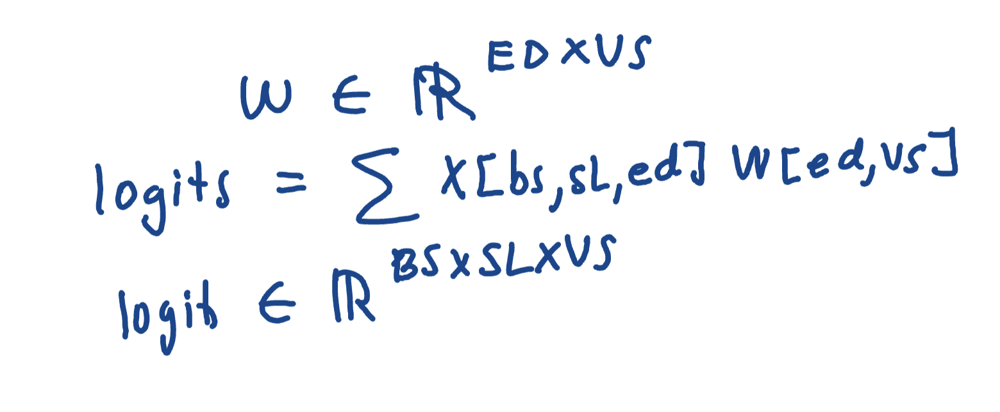

Today I started with implementing text chapter 4. Immediately, it threw at me the complete architecture of a simple gpt model. I know that it keeps going pretty quickly and starts using the model to create simple logits, but I wanted to go through it and just break apart the class functionalities first.
First thing, I think I left some holes in my understanding of the embeddings chapter. So basically, there are token embeddings and positional embeddings. Token embeddings map each token corresponding to a word to a n-dimensional space. Position embeddings map each location corresponding to a word to a n-dimensional space. It’s complicated and I had a hard time understanding it so I somewhat put a black box around it. However, it does make sense that both words and their locations have to have spatial significance. To put into perspective, ‘I’m scared of alligators and crocodiles and…’ showcases the significance of token embeddings, because naturally alligators and crocodiles should be roughly in the same spatial location (although that happens during training, not right off the bat’. But for positional embeddings, ‘The alligator ate the deer’ has a lot difference significance than ‘the deer ate the alligator’ even though they have the same words. In summary, we both have to consider the significance of the words, and the order they are put in.
The first lines that come up in reference to this is tself.tok_emb = nn.Embedding(cfg["vocab_size"], cfg["emb_dim"])
and self.pos_emb = nn.Embedding(cfg["context_length"], cfg["emb_dim"]) .
These creates those positional and token embeddings I was talking about. Let's just focus on
tok_emb because the process is very similiar. Eventually, this is used
in the forward pass function where it takes \(X\) as an argument. Mathematically:

Where (\(BS, SL, ED)\) represent \(\text{Batch Size, Sequence Length, Embedding Dimension}\). Basically what happened was that we recieved a tokenized batch of sentences at we created embeddings for them. A very similiar process happens with positions, but it looks a little different in the code.
After we calculate the position embeddings, we want to rewrite the input \(X\) such that it is a vector representing both position and tokens. Since they are the same shape, we just add them:

Now, this is interesting, because we go full circle back with what we were learning in the last chapter. This new input vector gets passed through our attention mechanisms. These mechanisms will be stored in the transformer module, though. Mathematically just to get a better look

Finally, we calculate those logits. The logits are predictions of the next tokens in unnormalized format. This is what it looks like to calculate:

While that is the architecture with one full pass through, it still has a lot of holes in my understanding which will be ironed out in the next full days. some of these operations also have very niche lines of code that will need to be memorized. Tomorrow, I'll head over through the chapter and try to pick them up along the way, and i think I made ther right decision to just focus on this today.